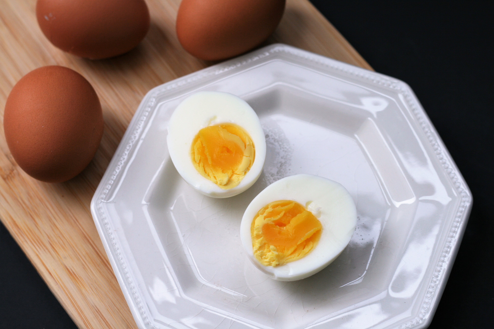

Boiled Egg

Description
the perfect hard-boiled egg is not boiled at all but rather steamed!
This secret was leaked by a chef, and it is the best way I've found for easy peeling and no green yolks.
Ingredients
Steps
- Fill a stainless steel steamer pot with about 1 inch water and bring to a boil.
- Add eggs to the steamer tray, carefully lower into the pot, cover, and reduce heat. Cook for 10 minutes for medium yolks or 15 minutes for fully-cooked yolks.
- Add eggs to the steamer tray, carefully lower into the pot, cover, and reduce heat. Cook for 10 minutes for medium yolks or 15 minutes for fully-cooked yolks.
- Gently crack each egg, roll on a cutting board, then peel the shell off from the fat end towards the point.